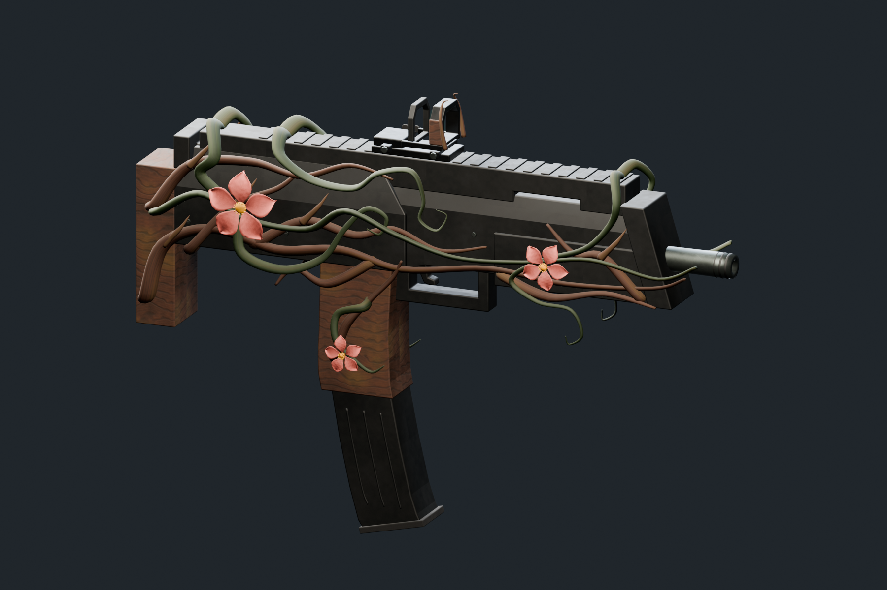
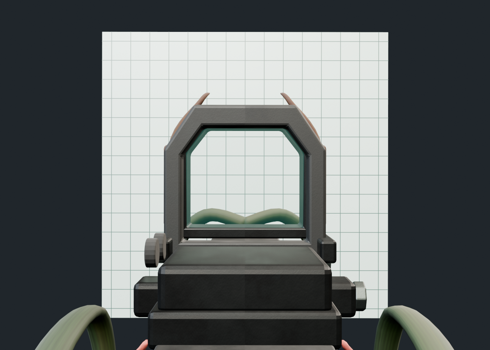
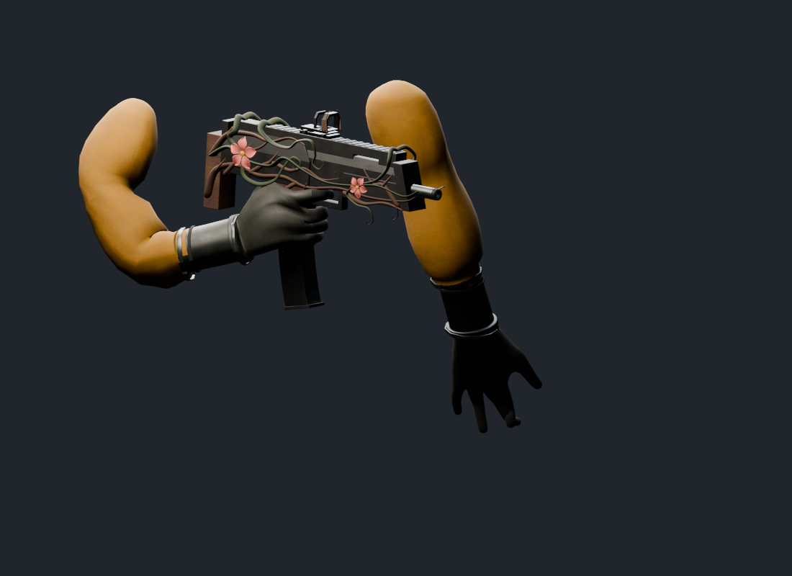
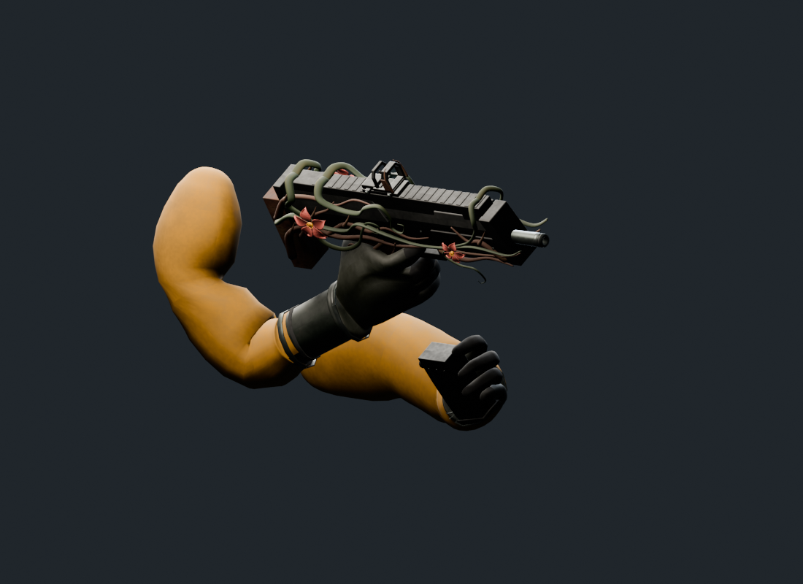
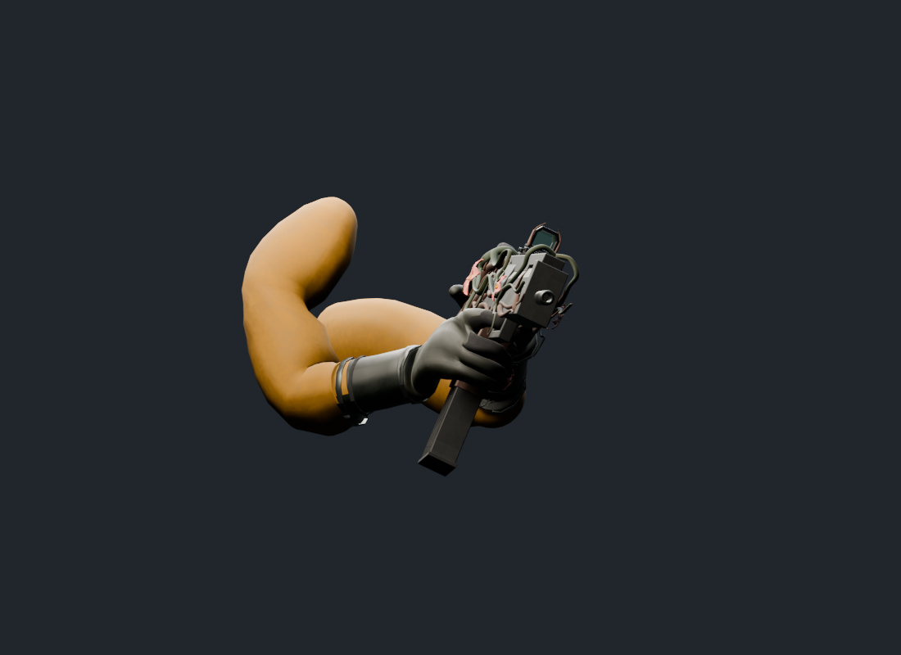
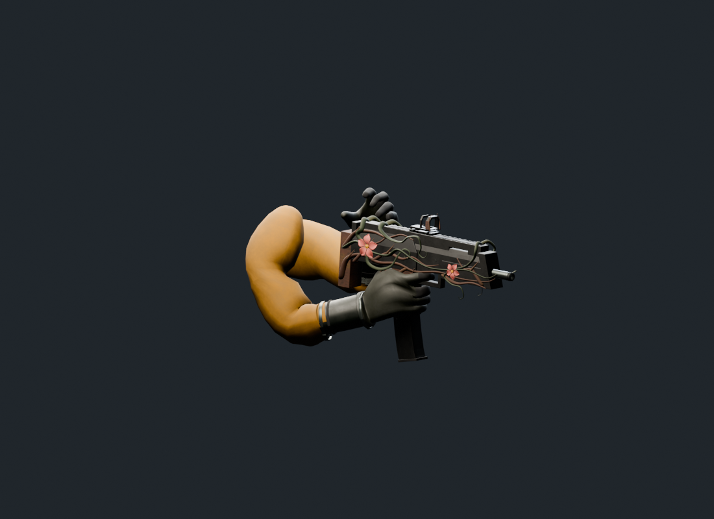

衝鋒槍美術初版 · 偏寫實材質 · 可替換反射瞄具

沿用來源五段動畫。此預覽為原始換彈速度；遊戲 Animator 的播放倍率另由現有系統控制。

另行設計雙層切角護罩與側面控制件。格線僅用於檢查視窗，尚未加入遊戲準星或更動 Unity 開鏡相機。




FBX 往返檢查：63 根骨骼、5 段動畫、6,615 個骨骼樣本。Unity 新模型匯入、正式材質及遊戲內接線尚未驗證。驗證報告 · 模組資料